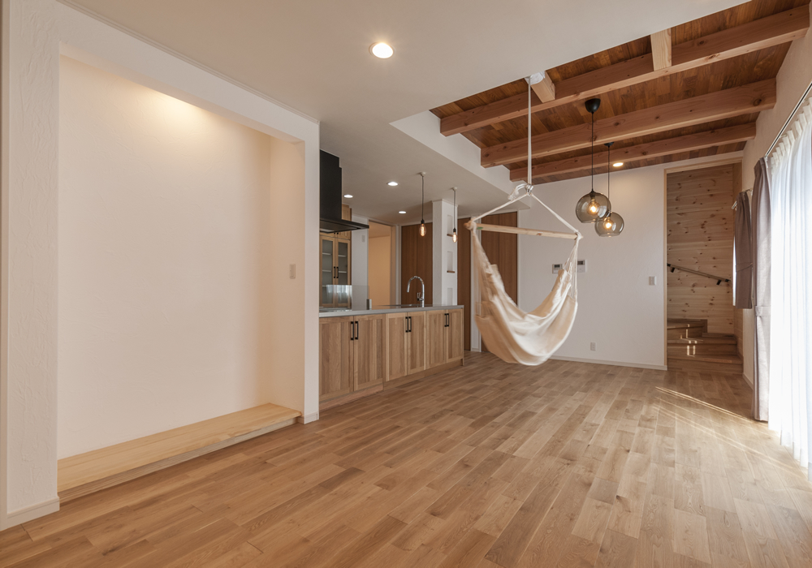
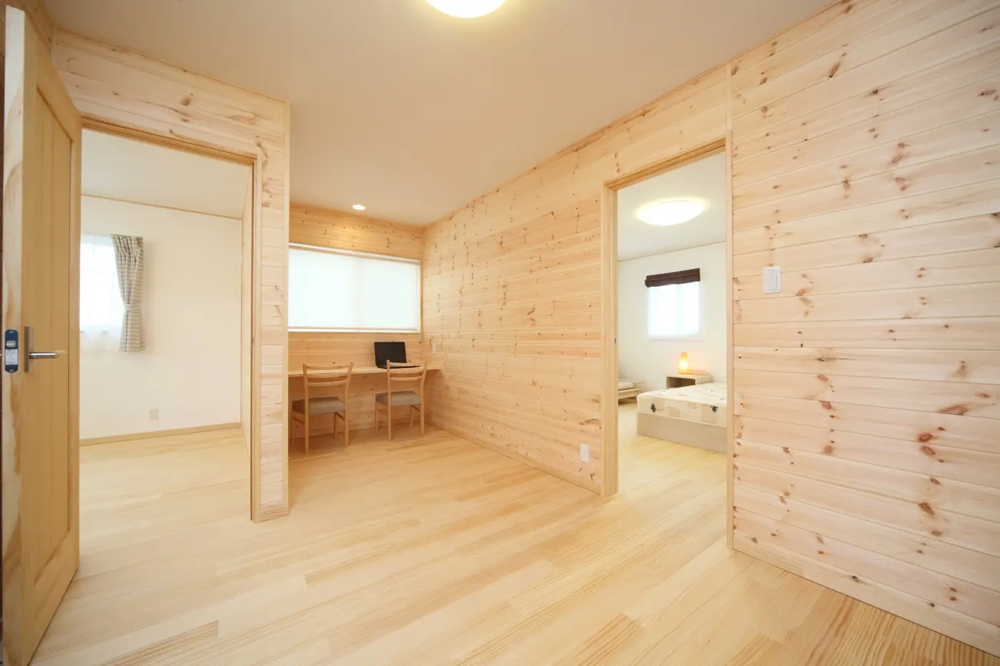
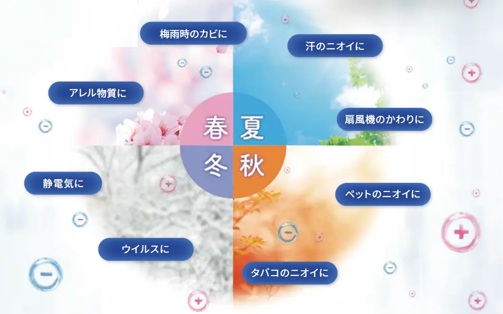

本社・高岡ショールーム
〒933-0062 富山県高岡市江尻846-10766-30-2582受付時間：金〜火 9:00–18:00
地図で見る

住む人の健康に配慮した天然素材を使った住宅をお客様にご提案すると、「フジ創さんの家の良さは良くわかるのですが、天然素材を使うと予算が合わなくて私たちには無理ですね」と言われることがありました。
また、見学会にいらした方に、「私たちの収入では、マイホームなんて一生無理だ」という方も多くいました。
そのような話をお聞きするたびに、“この人たちにも心地よい住まいを無理のない予算で届けたい”という思いが芽生えてきたのです。
その思いを実現するために調べてみる事にしました。
家づくりでは、建物だけでなく土地・付帯工事・諸費用を合わせた総額と、暮らしに無理のない返済計画を整理します。
たとえば借入2,030万円・35年・全期間固定年1.3％と仮定した元利均等返済では、毎月約6.02万円です。これは計算例で、現在の融資条件や土地・建物の購入可能額を示すものではありません。ボーナス返済なし、融資手数料・保証料・登記・保険・維持費などは含みません。
計算条件と予算の考え方を見る
しかし、単に安いだけではアイノスの家づくりとはいえません。“住む人の幸せな暮らし”を実現しなければならないのです。
また、見積り後にお客様のご要望以外で追加料金が発生したり、オプションで価格が上がらないように、すべて込みの価格に設定しなければなりません。
「無垢の床材」「漆喰塗の壁」「無垢材張りの壁」など天然素材を取り入れ安心して子育てができる天然素材の注文住宅、このようにしてアイノスの家が出来上がったのです。

アイノスの家は「ブライダルハウス」という名前でもご案内しています。
それはこれから、『結婚する人にこそ安心して子育てできる天然素材の注文住宅に住んでいただきたい』という思いからです。
一般には結婚すると親元を離れアパートに住む方が多いのですが、アパートは決して住み心地が良い住居ではありません。
まして、そこでのびのびと子育てをすることは難しいのです。
若いうちにこそ、ローンを組み、家族の将来や資金計画に合わせて、建てる時期や住まい方を一緒に考えたいと思っています。
最後までお読みいただき、ありがとうございました。
これからの人生を育んでいくあなたの大切な家族のために、私たちの作る家をご体感ください。
フジ創アイノス（Bridal House Ainos）は、有限会社フジ創が展開する住宅ブランドです。本社・ショールームは高岡市、富山事務所は富山市にあります。
| 商号 | 有限会社フジ創 |
|---|---|
| 所在地 | 本社・ショールーム：富山県高岡市江尻846-1 富山事務所：富山県富山市山室256-4 SKビル 2-A |
| 代表者 | 代表取締役 荒井 一 |
| 電話番号 | 0766-30-2582 0800-200-2661 |
| FAX | 0766-26-1011 |
| 設立 | 平成8年2月 |
| 事業内容 |
|
| 建築業許可 |
|
受付時間：金〜火 9:00–18:00
地図で見る受付時間：金〜火 9:00–18:00
地図で見る暮らしのアンケートで
家族の理想の家づくりを発見